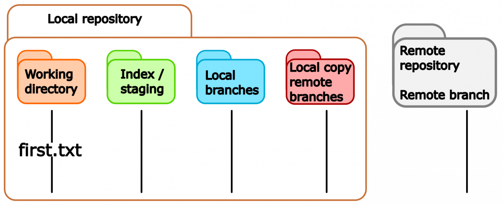
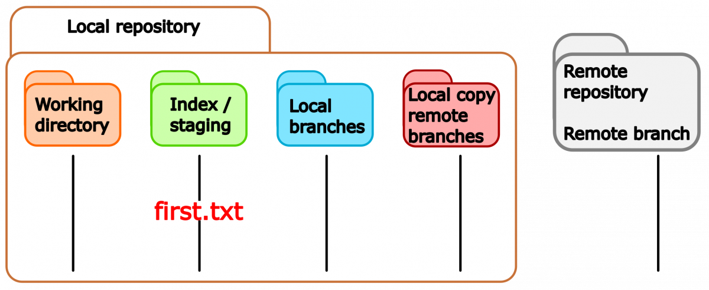
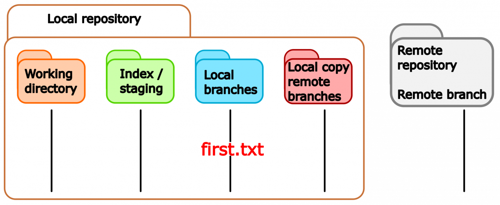
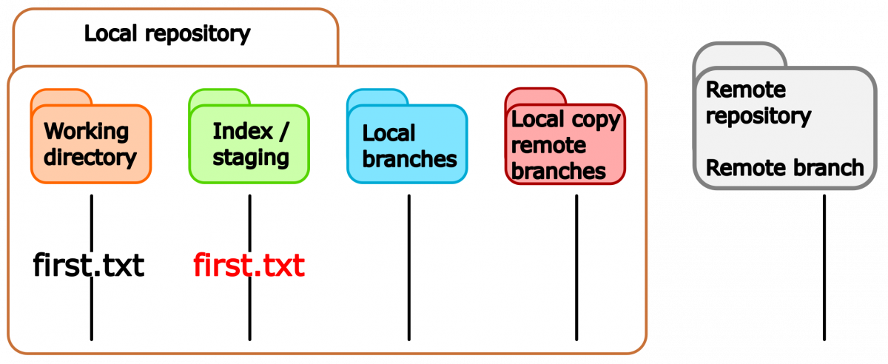

Lecture 2: Basic commands¶
Getting help¶
$ git help <command>
$ man git-<command>
$ git help commit
GIT-COMMIT(1) Git Manual GIT-COMMIT(1)
NAME
git-commit - Record changes to the repository
SYNOPSIS
git commit [-a | --interactive | --patch] [-s] [-v] [-u<mode>] [--amend]
[--dry-run] [(-c | -C | --fixup | --squash) <commit>]
[-F <file> | -m <msg>] [--reset-author] [--allow-empty]
[--allow-empty-message] [--no-verify] [-e] [--author=<author>]
[--date=<date>] [--cleanup=<mode>] [--[no-]status]
[-i | -o] [-S[<keyid>]] [--] [<file>...]
DESCRIPTION
Creating a repository from scratch¶
In case you want to start a project from scratch called myproject:
this will create a folder called .git in the current folder which contains the Git-related files.
We can now ask about the status of the repository:
$ git status
On branch master
No commits yet
nothing to commit (create/copy files and use "git add" to track)
Creating a repository by cloning an existing repository¶
Use the command:
repository_location is the path of the Git repository (if it is in your local machine) or a URL if it is on the internet. path_where_it_will_be is the path for the cloned repository.
$ git clone https://github.com/aliceuser2020/my-first-project.git ./my-project
Cloning into 'GitCourse/Alice/my-project'...
remote: Enumerating objects: 3, done.
remote: Counting objects: 100% (3/3), done.
remote: Total 3 (delta 0), reused 0 (delta 0), pack-reused 0
Unpacking objects: 100% (3/3), done.
Checking connectivity... done.
$ cd ./my-project
$ git status
On branch master
Your branch is up-to-date with 'origin/master'.
nothing to commit, working directory clean
Stages of files¶

Monitoring the differences in files¶
Differences or changes in files can be seen with the command
This command supports different options.
Adding files’ modifications¶
After initializing the repository, we decide to create a file called first.txt
If we ask about the status of the repository we will see the following message,
$ git status
On branch master
No commits yet
Untracked files:
(use "git add <file>..." to include in what will be committed)
first.txt
nothing added to commit but untracked files present (use "git add" to track)

We can now add the first.txt file to the staging area:
and then check the status of the repository:
$ git status
On branch master
No commits yet
Changes to be committed:
(use "git rm --cached <file>..." to unstage)
new file: first.txt

Unstaging files’ modifications part I¶
If you want to unstage the changes (maybe you are not convinced of them) type the line suggested by Git:
Notice that Git suggests this command because the repository is brand-new and nothing has been committed yet.
Committing changes¶
Once the changes are staged, they can be commited with the command
this will open a window of the default text editor in your system (in this case Vim)
First commit in myproject
# Please enter the commit message for your changes. Lines starting
# with '#' will be ignored, and an empty message aborts the commit.
#
# On branch master
#
# Initial commit
#
# Changes to be committed:
# new file: first.txt
#
write a commit message and upon saving the file the changes will be committed.
$ git commit
[master (root-commit) 3a7625b] First commit in myproject
1 file changed, 1 insertion(+)
create mode 100644 first.txt
the status after committing is
Fast (lazy?) commit option:
this command will add all files that were modified (and tracked) and commit them with the quoted message.

Unstaging files’ modifications part II¶
Imagine that after doing the first commit for first.txt file, you modify this file and stage it (git add first.txt). If you check the status the output will be (version 2.25.1):
On branch master
Changes to be committed:
(use "git restore --staged <file>..." to unstage)
modified: first.txt
For versions before 2.23 the status would look like:
On branch master
Changes to be committed:
(use "git reset HEAD <file>..." to unstage)
modified: first.txt
Git suggests a different way to unstage the file as we saw before, because now there is a HEAD pointer.
unstages the changes made to filename. From the website https://git-scm.com/docs/git-restore: THIS COMMAND IS EXPERIMENTAL. THE BEHAVIOR MAY CHANGE.
is an old command for unstaging, with this command Git will untrack filename (staging for removal) leaving the file in the working directory
Content of a commit message¶
- why is this change needed?
- how is the problem approached?
- are there side effects?
- write structured text (~70 characters)
- one can include the ticket numbers for related issues for instance (#1112)
Important: check that the code works before commiting. Here, test cases are very handy. Git kurz & gut, O’Reillys, Nina Siessegger.
Reverting to the previous commit¶
If you made a commit and you regret it later, you can revert the changes to the previous commit with the command:
Adding multiple files¶
In case you want to add multiple files, that follow a pattern, at the same time you can use Linux-type wild cards. As an example, we can add the files file1.txt, file2.txt, file3.txt at once with the commands (equivalent for this test case):
If we want to add all the files for staging we can do:
$ git add -A (all files including those in the parent folder)
$ git add . (all files in the sub-folders)
Renaming files/folders¶
Imagine that you want to change the name of the file first.txt to Readme.txt, in this case you can use the command:
Although there is not feedback from the command the status of the file has now changed
$ git status
On branch master
Changes to be committed:
(use "git restore --staged <file>..." to unstage)
renamed: first.txt -> Readme.txt
you can now commit the changes. Renaming files, instead of creating new ones, can help you to keep a consistent history of the files.
Moving files¶
Similar to the mv Linux command, the git mv command can be also used to move a file to a different location:
$ git mv filename newlocation
$ git mv first.txt src/
$ git status
On branch master
Changes to be committed:
(use "git restore --staged <file>..." to unstage)
renamed: first.txt -> src/first.txt
Removing files¶
If some file is not useful any longer and we want to delete it from our repository, we can issue the command,
$ git rm location/filename
$ git rm src/first.txt
$ git status
On branch master
Changes to be committed:
(use "git restore --staged <file>..." to unstage)
deleted: src/first.txt
Sometimes it is more convenient to rename files instead of deleting them to keep the history more consistent.
Ignoring files¶
If you want to ignore some files in your repository, for instance, temporary (.tmp) or binary (.bin) files. One way to accomplish this is by creating a file called .gitignore in the repository with some rules with a Linux-type wild cards syntax
then, you will have to commit the .gitignore file as usual.
One caveat of using a .gitignore file is that it will be shared with all the collaborators. One can instead use the local exclude file in .git/info/exclude to define the rules. This file won’t be shared.
# $ git ls-files --others --exclude-from=.git/info/exclude
# Lines that start with '#' are comments.
# For a project mostly in C, the following would be a good set of
# exclude patterns (uncomment them if you want to use them):
# *.[oa]
# *~
*.tmp
*.bin
~
Generating aliases¶
The following command shows a graph of the commits’ tree in an organized way:
This command is too long to type/remember. Git allows you to create shortcuts/aliases for commands:
$ git config --global alias.shortcut <git command>
$ git config --global alias.graph "log --all --graph --decorate --oneline"
In this way, you can use a customized git graph command:
$ git graph
* 39ecba2 (HEAD -> master) Fourth commit
* 3cd651b Third commit
* 7dce2ff Second commit
* 1f2cdcc First commit
A second way to generate an alias is by adding it to your .bashrc file:
which will make the command graph available on the command line.
Intermediate/ Advanced commands¶
Adding files’ modifications interactively¶
Suppose we create an empty file, stage it, and commit the changes as follows:
Now, we add a couple of lines to our file first.txt and now it looks like
The status command tells us that we did some modifications to the file:
On branch master
Changes not staged for commit:
(use "git add <file>..." to update what will be committed)
(use "git restore <file>..." to discard changes in working directory)
modified: first.txt
no changes added to commit (use "git add" and/or "git commit -a")
Let’s suppose that the new text (5 lines) refer to different topics: TODO list and Summary. Then, it would be better to have them in different commits. We can add the modifications interactively:
diff --git a/first.txt b/first.txt
index e69de29..96dd9a2 100644
--- a/first.txt
+++ b/first.txt
@@ -0,0 +1,5 @@
+This is my first file
+
+* TODO list
+
+* Summary
(1/1) Stage this hunk [y,n,q,a,d,e,?]?
choose the e edit option to enter the editing mode.
# Manual hunk edit mode -- see bottom for a quick guide.
@@ -0,0 +1,5 @@
+This is my first file
+
+* TODO list
+
+* Summary
# ---
# To remove '-' lines, make them ' ' lines (context).
# To remove '+' lines, delete them.
# Lines starting with # will be removed.
Because we don’t want Summary in the first commit, we delete that line and save the file.
You can now take a look at the status of the file
$ git status
On branch master
Changes to be committed:
(use "git restore --staged <file>..." to unstage)
modified: first.txt
Changes not staged for commit:
(use "git add <file>..." to update what will be committed)
(use "git restore <file>..." to discard changes in working directory)
modified: first.txt
Notice that the file first.txt has been partially staged.

The difference between staged changes and the unstaged ones can be seen with:
the difference between staged changes and the previous commit with:
and the difference between the unstaged changes and the previous commit with:
At this point, you can commit the staged changes and later on stage and commit the remaining changes.
Amending commits¶
The following command will modify your last commit by adding more content to it:
the flag -m will allow you to write a short message and - -no-edit will keep the message from the previous commit. Note: use this command in commits that haven’t been pushed on public branches. This command modifies the history.
Simplifying commits¶
Suppose that you have a series of commits which are close-related in your local repo:
$ git log --all --decorate --oneline --graph
$ git graph
* 39ecba2 (HEAD -> master) Fourth commit
* 3cd651b Third commit
* 7dce2ff Second commit
* 1f2cdcc First commit
in this case, the three last commits are related and can be squashed into a single commit.
$ git rebase -i HEAD~3
pick 7dce2ff Second commit
pick 3cd651b Third commit
pick 39ecba2 Fourth commit
# Rebase 1f2cdcc..39ecba2 onto 1f2cdcc (3 commands)
#
# Commands:
# p, pick <commit> = use commit
# r, reword <commit> = use commit, but edit the commit message
# e, edit <commit> = use commit, but stop for amending
# s, squash <commit> = use commit, but meld into previous commit
# f, fixup <commit> = like "squash", but discard this commit's log message
# x, exec <command> = run command (the rest of the line) using shell
# b, break = stop here (continue rebase later with 'git rebase --continue')
# d, drop <commit> = remove commit
# l, label <label> = label current HEAD with a name
# t, reset <label> = reset HEAD to a label
# m, merge [-C <commit> | -c <commit>] <label> [# <oneline>]
# . create a merge commit using the original merge commit's
# . message (or the oneline, if no original merge commit was
# . specified). Use -c <commit> to reword the commit message.
#
# These lines can be re-ordered; they are executed from top to bottom.
#
# If you remove a line here THAT COMMIT WILL BE LOST.
#
# However, if you remove everything, the rebase will be aborted.
#
# Note that empty commits are commented out
choose the option s (squash)
pick 7dce2ff Second commit
s 3cd651b Third commit
s 39ecba2 Fourth commit
# Rebase 1f2cdcc..39ecba2 onto 1f2cdcc (3 commands)
#
# Commands:
# p, pick <commit> = use commit
# r, reword <commit> = use commit, but edit the commit message
# e, edit <commit> = use commit, but stop for amending
# s, squash <commit> = use commit, but meld into previous commit
# f, fixup <commit> = like "squash", but discard this commit's log message
# x, exec <command> = run command (the rest of the line) using shell
# b, break = stop here (continue rebase later with 'git rebase --continue')
# d, drop <commit> = remove commit
# l, label <label> = label current HEAD with a name
# t, reset <label> = reset HEAD to a label
# m, merge [-C <commit> | -c <commit>] <label> [# <oneline>]
# . create a merge commit using the original merge commit's
# . message (or the oneline, if no original merge commit was
# . specified). Use -c <commit> to reword the commit message.
#
# These lines can be re-ordered; they are executed from top to bottom.
#
# If you remove a line here THAT COMMIT WILL BE LOST.
#
# However, if you remove everything, the rebase will be aborted.
#
# Note that empty commits are commented out
a text editor message will appear where you can type the message for the squashed commit:
# This is a combination of 3 commits.
# This is the 1st commit message:
Summary of three commits
#Second commit
# This is the commit message #2:
#Third commit
# This is the commit message #3:
#Fourth commit
# Please enter the commit message for your changes. Lines starting
# with '#' will be ignored, and an empty message aborts the commit.
#
# Date: Mon Sep 21 16:48:36 2020 +0200
#
# interactive rebase in progress; onto 1f2cdcc
# Last commands done (3 commands done):
# s 3cd651b Third commit
# s 39ecba2 Fourth commit
# No commands remaining.
# You are currently rebasing branch 'master' on '1f2cdcc'.
#
# Changes to be committed:
# modified: Commits.txt
#
Finally, we check the log file and see that we have now only two commits with the new commit message:
$ git log --all --decorate --oneline --graph
$ git graph
* 62f921f (HEAD -> master) Summary of three commits
* 1f2cdcc First commit
Note: use this command in commits that haven’t been pushed on public branches. This command modifies the history.
Advanced¶
Git blame (Advanced)¶
it displays information about the last modifications of authors line by line
git blame filename
$git blame 1.basic-commands/README.md
^a18abd1 (Birgitte Brydsö 2021-09-28 12:21:06 +0200 9) - stage the file
^a18abd1 (Birgitte Brydsö 2021-09-28 12:21:06 +0200 10) - commit the changes
dd5db248 (Pedro Ojeda-May 2021-11-02 10:53:01 +0100 11) - create a second file "Poem.md" without any text (hint: use touch command), stage and commit it
here we can see the commit, author, timestamp, line number and line content.